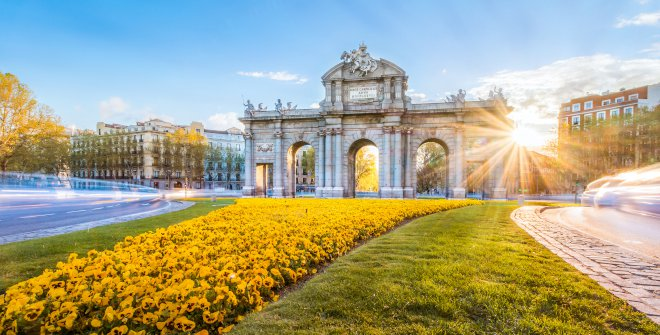
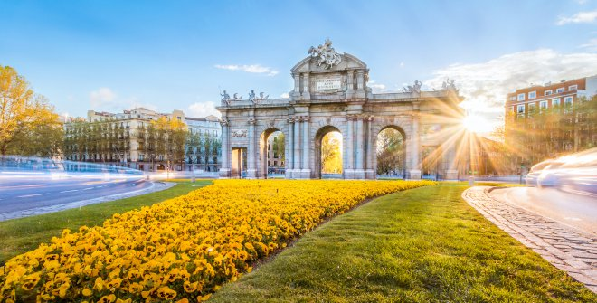

Estadio Santiago Bernabeu
Es un recinto deportivo propiedad del Real Madrid Club de Fútbol, situado en pleno paseo de la Castellana, en el distrito de Chamartín de Madrid, España. Se inauguró el 14 de diciembre de 1947 y su aforo actualmente es de 84 000 espectadores.1 El estadio está catalogado por la UEFA con la máxima distinción, «estadio de élite».

Ubicacion
Civitas Metropolitano
El Estadio Metropolitano, conocido actualmente como Estadio Cívitas Metropolitano por motivos de patrocinio, es un recinto deportivo propiedad del Club Atlético de Madrid, situado en el barrio de Rosas, distrito de San Blas-Canillejas, en Madrid, España.
¿Porqué es un lugar de interés?
El Ponte de Vecchio és un lugar de interes por su cultura y su historia, sus tiendas de joyas y sobretodo por sus vistas panorámica.
Ubicacion

 
